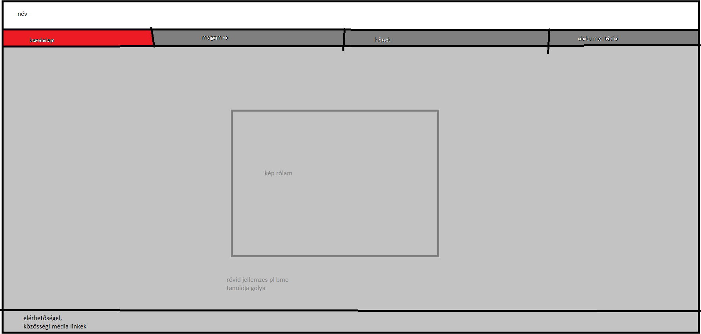
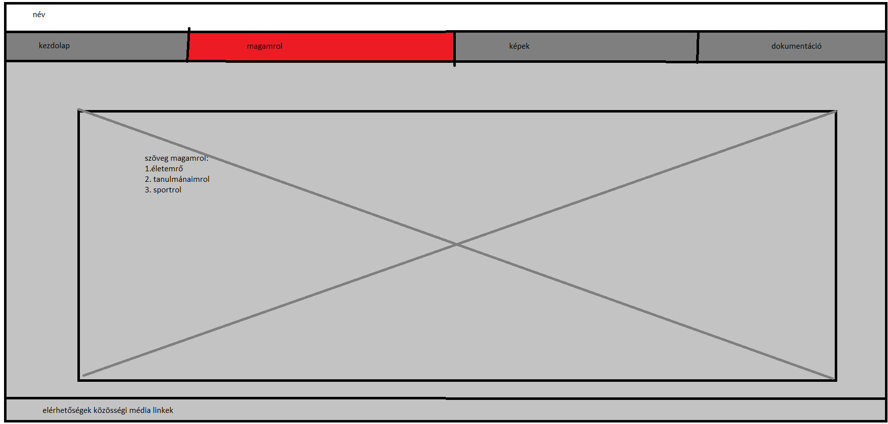
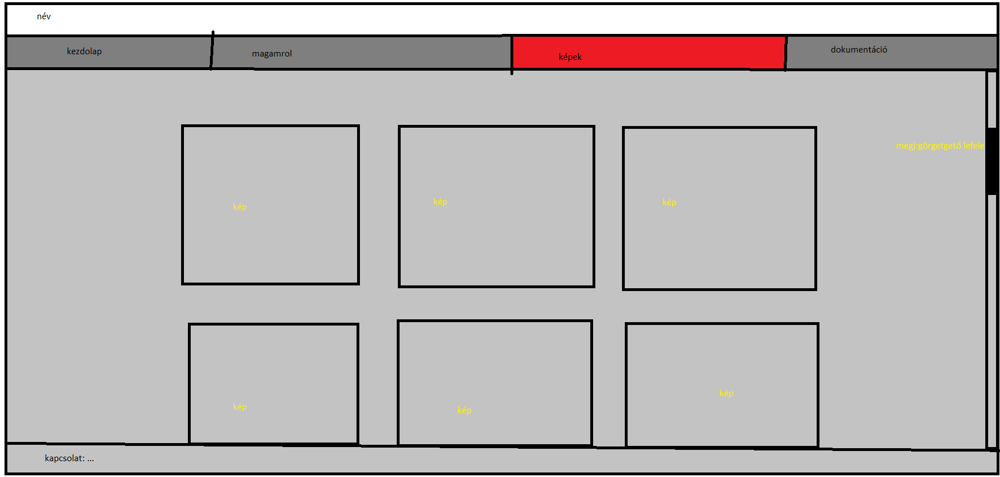
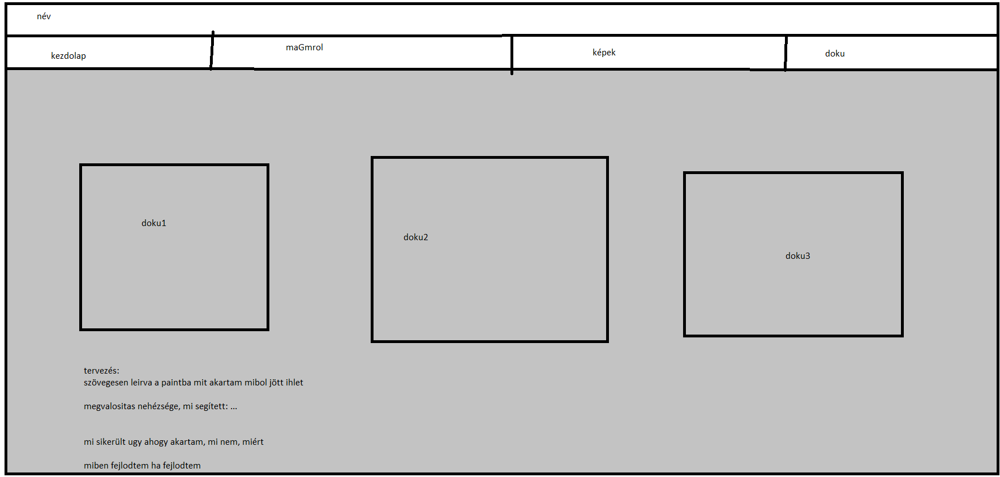

| eredeti tervek, rajzok: igyekeztem a tájékoztatóban szereplő szempontrendszert minimalista stílusban megvalósítani     |
|
felmerülő nehézségek:
A legnagyibb nehézség a tervem pontos megvalósításában az volt, hogy a paint-os terveim előbb készültek mint ahogy a videó segédanyagokat láttam volna (enyhén átgondolatlanul) így a legkevesebb átalakítással olyan megvalósításra törekedtem melyeket a videóanyagokban láttam. |
|
változtatások:
eredeti terveimet legnagyobb részt tartani tudtam, de a fent említett hiányosságaim miatt (mivel ez az első weboldalam) pár változtatást eszközöltem. |
|
felhasznált weboldalak:
https://www.youtube.com/ |